Coraline é uma história criada por Neil Gaiman com o objetivo de dar de presente para a sua filha de 11 anos. Mas essa história demorou tanto para ser terminada que o presente foi para a sua outra filha. Nesse site, eu, Gabriel Henrique, vou contar a minha experiência com essa incrível historia.
Nem sei como irei começar esse blog, aliás tenho muita coisa á dizer sobre coraline.
Acredito que seja melhor eu começar do começo, mas antes disso tenho que avisar que terá spoiler de toda a história de coraline, tanto do livro como da animação.
Agora que já está preparado, vamos atravessar além da fechadura da porta.
Coraline Jones é uma garotinha de 11 anos que acaba de se mudar para a nova casa junto com seus pais Jones. A casa é separada em três: a parte do sótão onde mora Sr.bobinsky, a parte do porão onde mora Sra.Spink e Srta.Forcible, e por fim a casa do meio, onde os Jones começa a morar. Uma coisa interessante sobre a casa, e que ela era de uma velhinha senhora, única coisa que sabemos apenas com o livro é que "a casa é muito velha e cheira gente velha" propria fala de Coraline Jones no livro, enquanto no filme de Coraline dirigido por Henry Selick.
A animação de 2009 é uma excelente adaptação do livro de Neil Gaiman, contudoHenry Selick adicionou dois novos personagens para a drama, avó de Wybie e o proprio Wybie. Wybie foi criado para facilitar a contar melhor a história na visão cinematografica, aliás o livro de Coraline é contado pela cabeça de Coraline Jones, assim o filme não tendo que se render a mesma tipo narrativo do livro. Enquanto a avó de Wybie tem a única missão de ser a dona da casa que a protagonista mora, dando assim novos degruas de profundidade para a casa.
Aproveitando o gancho, vou apresentar todos os personagens dessa historia, sendo eles:
| Palacio cor de rosa | Outro Mundo |
|---|---|
| mãe de Coraline 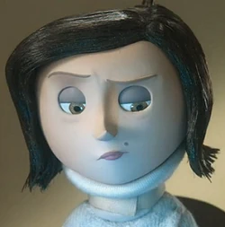 | Outra mãe 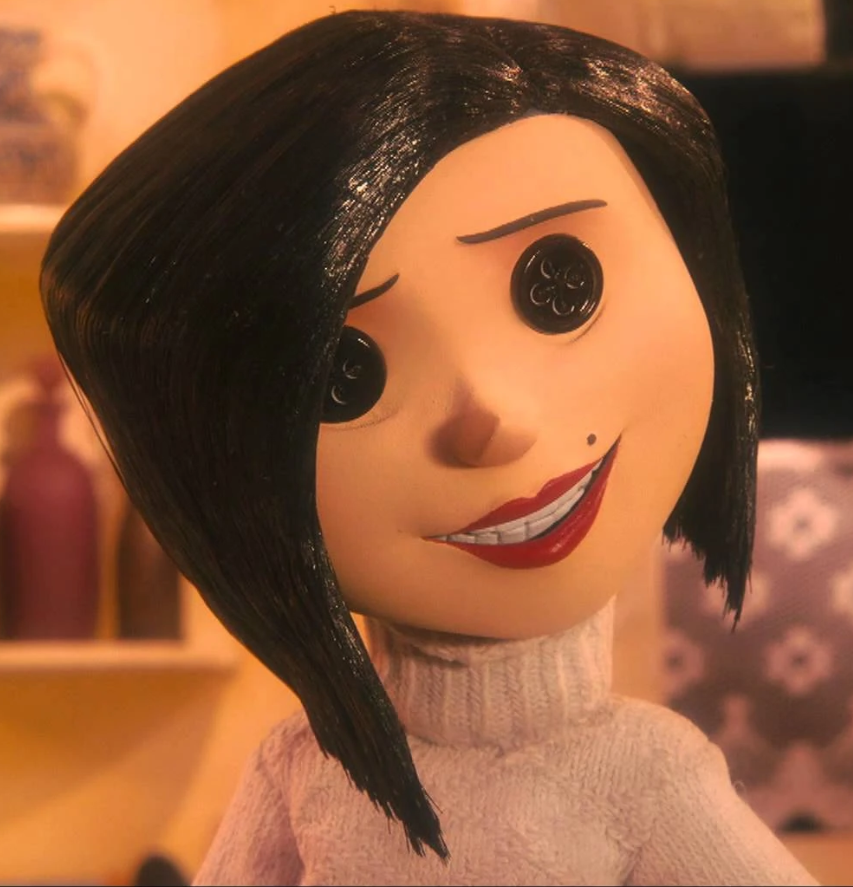 |
| Pai de Coraline 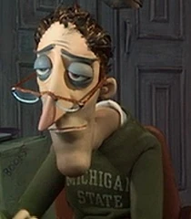 | Outro pai 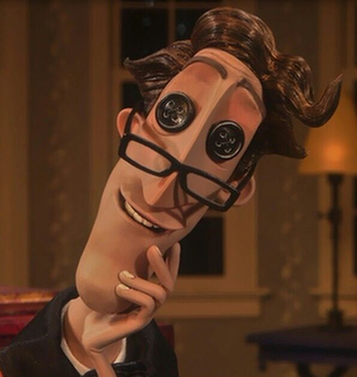 |
| Sr.Bobinsky 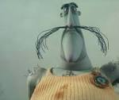 | outro Sr.Bobinsky 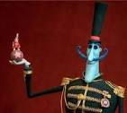 |
| Srta.Spink 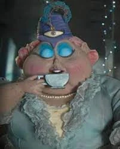 | outra Srta.Spink 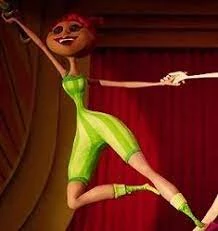 |
| Srta.Forcible 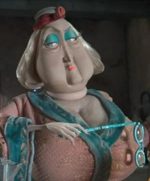 | outra Srta.Forcible 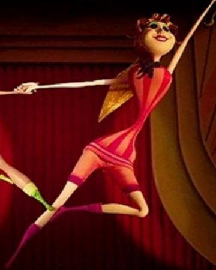 |
| Wybie Lovat 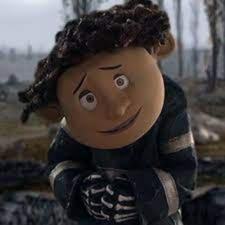 | outro Wybie Lovat 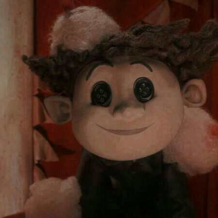 |
| Coraline | boneca de Coraline 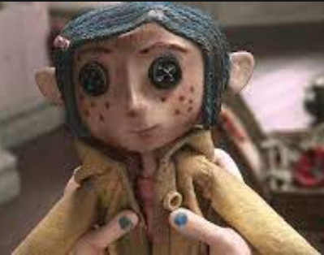 |
| O gato 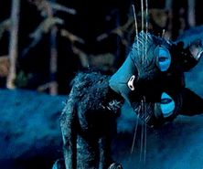 | As crincas 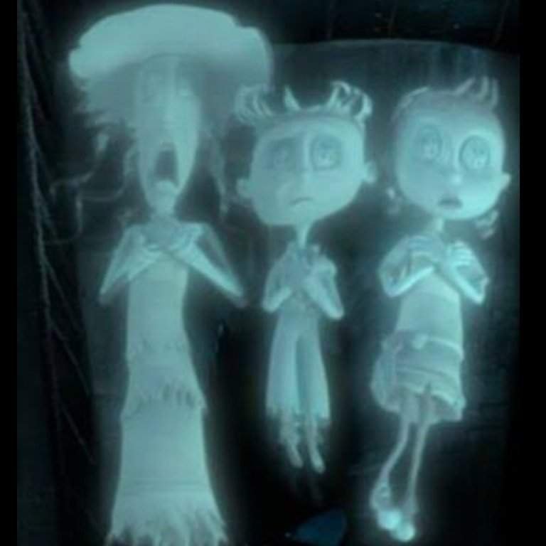 |
Loading...